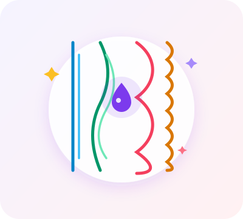
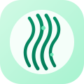
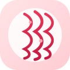
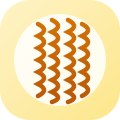

Liso
Fios retos sem ondulações. A oleosidade natural percorre a haste livremente, proporcionando brilho rápido e propensão a raiz oleosa.
Um guia interativo para conhecer diferentes tipos de cabelo e descobrir cuidados que podem fazer parte da sua rotina.

Cada curvatura possui características biológicas únicas e necessidades exclusivas. Conheça cada uma e clique para explorar os cuidados recomendados.
Fios retos sem ondulações. A oleosidade natural percorre a haste livremente, proporcionando brilho rápido e propensão a raiz oleosa.

Padrão em formato de "S". Fios versáteis que combinam raiz mais lisa com comprimento sinuoso, pedindo equilíbrio contra o frizz.

Espirais bem marcadas e cheias de movimento. A curvatura dificulta o trajeto do óleo natural, demandando hidratação e nutrição frequentes.

Padrão em Z ou espirais fechadinhas, dotado de muito volume e nobreza. Exige delicadeza no desembaraço e nutrição potente com manteigas.
Fios transformados por processos químicos ou térmicos. Cutículas alinhadas artificialmente que necessitam de reposição de massa e proteção.
Compreenda as três etapas essenciais para manter os fios saudáveis, resistentes e radiantes ao longo das semanas.
A hidratação ajuda a repor a água e a umidade natural do cabelo, essenciais para manter os fios com aparência mais macia, maleável, sedosa e com movimento leve.
A nutrição está relacionada à reposição de lipídios e óleos benéficos. Ela forma uma barreira protetora que reduz o ressecamento, sela a hidratação e controla ativamente o frizz.
A reconstrução repõe as proteínas estruturais da fibra capilar. Deve ser especialmente considerada quando os fios estão fragilizados, porosos, quebradiços ou passaram por química.
Diretrizes práticas de lavagem, hidratação, finalização e proteção térmica formuladas especificamente para cada estrutura de fio.
Equilíbrio entre raiz e pontas
Lave o couro cabeludo com água morna ou fria para evitar a superprodução de sebo.
Aplique máscaras apenas do comprimento às pontas, evitando produtos densos na raiz.
Nunca use secador ou prancha sem protetor térmico em spray para preservar a cutícula.
Evite passar as mãos nos fios frequentemente ao longo do dia para não engordurá-los.
Movimento e definição natural
Mantenha hidratação semanal com babosa e pantenol para reter água sem perder leveza.
Amasse as ondas de baixo para cima com toalha de microfibra e produtos fluidos.
Mousses e gelatinas suaves garantem fixação e definição duradoura às curvas.
Evite esfregar tecidos ásperos e borrife água com leave-in no day after para reavivar.
Elasticidade e nutrição intensa
Reponha água semanalmente para manter o formato elástico dos cachos sem ressecar.
Faça umectações periódicas com óleo de coco ou rícino para combater a porosidade.
Distribua creme de pentear mecha a mecha com os cabelos encharcados para cachos definidos.
Use fronha ou touca de cetim para dormir e não quebrar a estrutura ao descansar.
Emoliência, carinho e volume
Manteiga de karité e óleos densos formam camada protetora indispensável contra o ressecamento.
Nunca penteie os fios a seco. Desembarace somente com os fios molhados e condicionados.
Pré-shampoo com óleo antes da lavagem e touca de cetim à noite preservam a fibra capilar.
O método LOC (Líquido, Óleo, Creme) sela a umidade por vários dias sem ressecar as pontas.
Preservação e restauração contínua de massa capilar
Fios alisados tendem a ficar rígidos com o tempo. A hidratação devolve maleabilidade e balanço natural.
Os processos químicos removem o manto hidrolipídico do fio; óleos nobres repõem o toque aveludado e o brilho.
Secador ou prancha em fios com química sem protetor térmico é a principal causa de corte químico e quebra.
Utilize shampoos de pH ácido/suave e intercale reconstruções com queratina para preencher as fissuras da haste.
Responda às 3 perguntas rápidas abaixo para receber uma análise personalizada e sugestões sob medida para sua rotina.
Recomendações elaboradas com base no perfil capilar informado
Cabelos submetidos a progressivas ou outros processos de alisamento sofreram modificação na estrutura original do fio e podem precisar de atenção especial, incluindo hidratação profunda contínua, nutrição repositora de lipídios e cuidados rigorosos de proteção térmica para preservar a integridade da fibra capilar.
Lembre-se: cada cabelo possui necessidades diferentes. Observe como seus fios respondem aos cuidados e, quando necessário, procure orientação profissional.
Tem alguma pergunta sobre lavagem, frizz, cronograma ou finalização? Digite abaixo e receba uma orientação imediata.